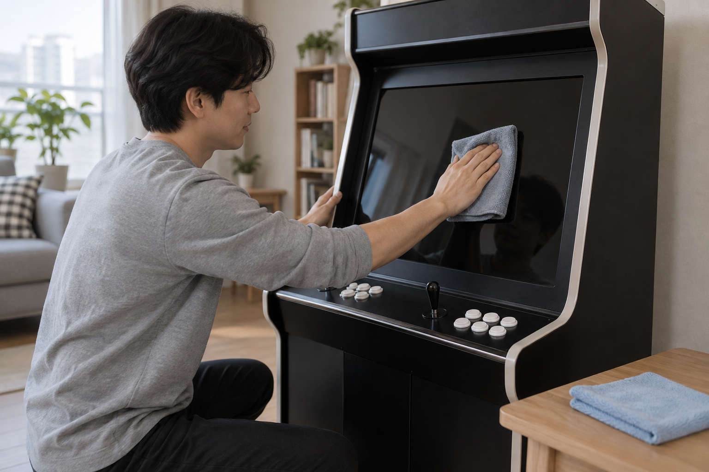
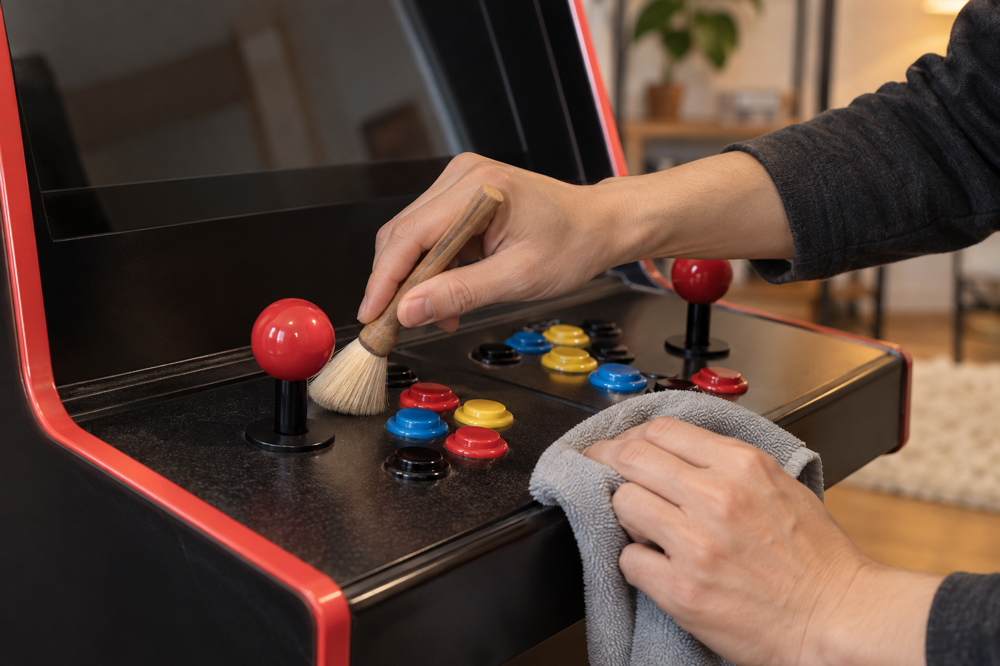

오락기 화면과 조작부는 전원을 끈 뒤 마른 부드러운 천으로 나누어 닦는 것이 기본입니다. 세정액을 기기에 직접 뿌리거나 버튼과 화면 틈으로 습기가 들어가게 하지 말고, 소재와 청소 방법이 불분명하면 제품 안내를 먼저 확인하세요.
청소 전에 전원과 도구를 확인하세요
게임을 종료하고 제품 안내에 맞춰 전원을 끈 뒤 화면과 소리가 멈췄는지 확인하세요. 깨끗하고 부드러운 천, 먼지를 털 마른 부드러운 솔처럼 용도가 분명한 도구를 따로 준비하고 거친 수세미나 날카로운 도구는 사용하지 마세요. 전원 순서가 헷갈리면 오락기를 안전하게 켜고 끄는 방법을 먼저 확인하세요.
청소를 시작하기 전에는 전원과 케이블 상태를 확인하고 사용할 도구를 따로 준비하세요.
- 게임을 끝내고 제품 안내 순서대로 전원 끄기
- 화면용 천과 조작부용 천을 나누어 준비하기
- 마른 부드러운 솔로 틈의 먼지만 먼저 털기
- 세정액 사용 가능 여부를 제품 안내에서 확인하기

화면은 부드러운 천으로 가볍게 닦으세요
화면의 먼지는 마른 부드러운 천으로 가볍게 쓸어내고, 한 부분을 강하게 누르거나 반복해서 문지르지 마세요. 얼룩이 남아도 물이나 세정액을 화면에 직접 뿌리지 말고 해당 화면 소재에 허용된 방법이 있는지 안내서나 판매자에게 확인하세요. 노리박스 제품 목록에는 강화유리 또는 아크릴튜닝을 제품명에 안내한 상품이 있어, 모든 화면과 전면 소재가 같다고 보고 한 가지 방법을 적용하면 안 됩니다.
화면에는 세정액을 직접 뿌리지 말고 부드러운 천으로 가볍게 닦아내세요.

조이스틱과 버튼은 표면부터 정리하세요
조이스틱 손잡이와 버튼 표면은 별도의 마른 천으로 닦고, 가장자리의 먼지는 마른 부드러운 솔로 바깥쪽으로 털어내세요. 액체가 틈으로 흐르지 않게 하고 청소만을 위해 버튼을 돌리거나 조작부를 열지 마세요. 노리박스 제품 목록에는 LED 오락기버튼과 버튼교체용 공구가 각각 별도 상품으로 안내되므로, 표면 청소와 부품 교체·분해는 구분해야 합니다.
조이스틱과 버튼 주변은 틈으로 습기가 들어가지 않도록 표면만 차례로 닦으세요.
이상이 남으면 상태를 기록해 문의하세요
청소를 마친 뒤에는 천 조각이나 습기가 남지 않았는지 확인하고 제품 안내에 따라 충분히 마른 상태에서 전원을 켜세요. 버튼이 계속 걸리거나 조이스틱 입력이 예상과 다르면 힘을 주어 반복 조작하거나 임의로 분해하지 마세요. 증상이 나타나는 버튼 위치와 화면 상태를 정리한 뒤 판매자에게 문의하고, 기본 입력 점검은 조이스틱과 버튼 확인 방법에서도 이어서 볼 수 있습니다.
청소 뒤에도 입력이 이상하면 분해하지 말고 상태를 기록해 판매자에게 문의하세요.
현재 노리박스 오락실게임기와 관련 부품은 제품자세히보기에서 확인하세요.